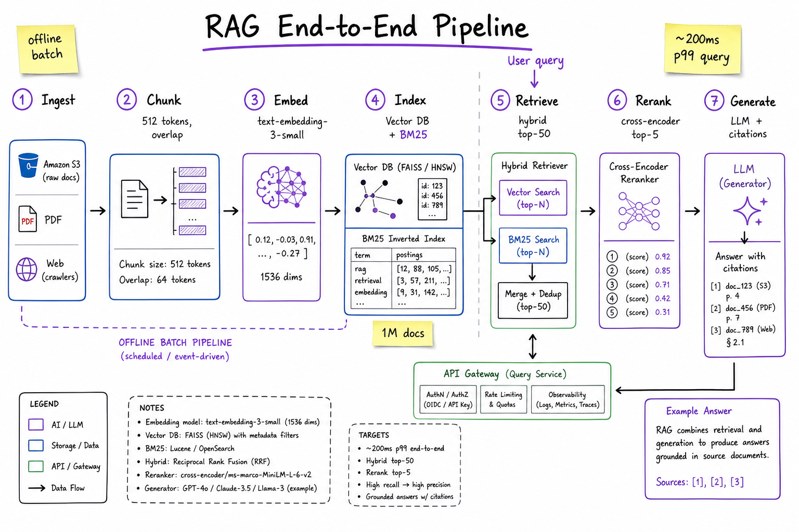
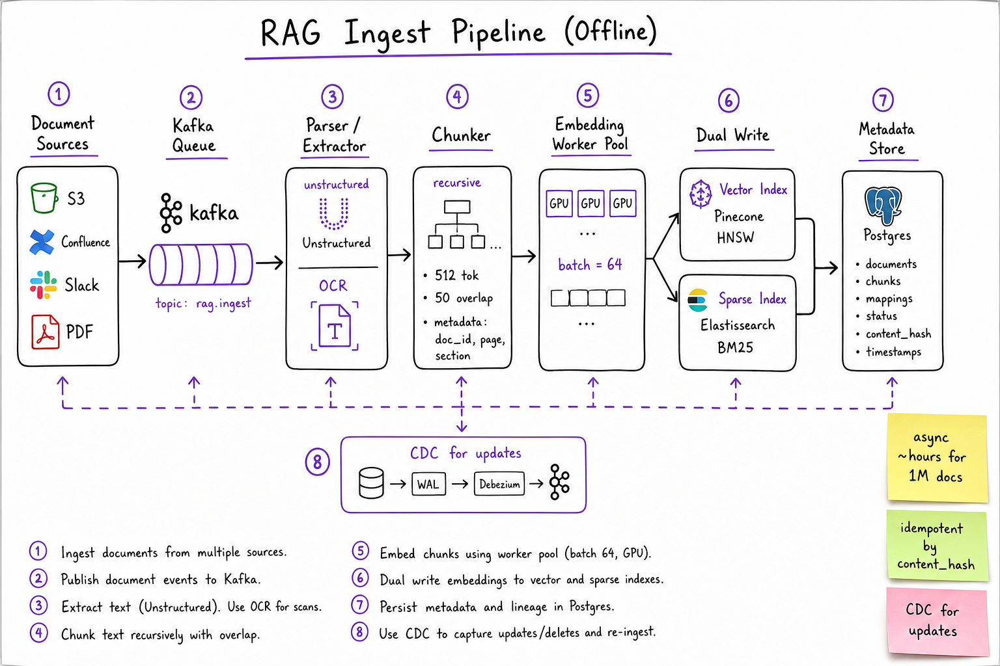
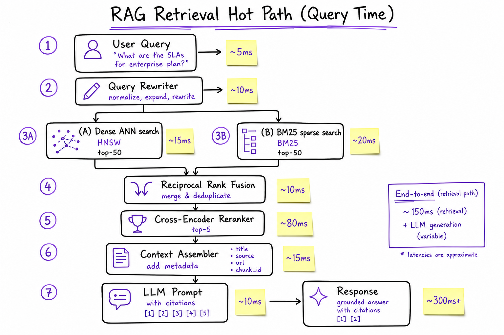

RAG End-to-End // Systems
Production retrieval-augmented generation: offline ingest → chunk → embed → dual index (dense + sparse) → hybrid retrieve → cross-encoder rerank → grounded LLM generation with citations. The canonical AI system design interview.

Full RAG pipeline: offline ingest path (sources → parse → chunk → embed → dual index) and online query path (rewrite → hybrid retrieve → rerank → assemble context → generate with citations). Two pipelines, one metadata spine.
01 — What & Why
Problem
LLMs hallucinate on private, time-varying, or domain-specific knowledge. RAG grounds generation by retrieving relevant passages at query time instead of stuffing everything into pre-training or context.
Functional Requirements
- Ingest documents from S3, Confluence, Slack, PDFs, web crawls
- Answer user questions with accurate, up-to-date information
- Return inline citations linking to source chunks (doc_id, page, URL)
- Support document refresh / deletion (CDC, re-index)
- Multi-tenant isolation (org_id scoping on every query)
Non-Functional Requirements
- Latency: <500ms p99 end-to-end (retrieve + rerank + generate first token)
- Throughput: 10K QPS query serving at peak
- Freshness: new docs searchable within minutes (near-line ingest)
- Recall: relevant chunk in top-5 after rerank >95% on golden set
- Faithfulness: answer supported by retrieved context, not invented
- Cost: embedding + LLM token budget per query bounded
01a — Core Concepts
| Term | Definition | Gotcha |
|---|---|---|
| Chunk | Atomic retrieval unit (~256–1024 tokens) with metadata (doc_id, page, section). | Too small = lost context; too large = noisy retrieval + wasted context window. |
| Embedding | Dense vector representation of text for semantic similarity search. | Query and doc must use the same model + version. Re-embed on model upgrade. |
| Vector Index | ANN structure (HNSW, IVF) for sub-linear nearest-neighbor search. | Recall@k drops at scale; tune ef_search / nprobe. Not exact search. |
| Sparse Index | BM25 / inverted index for lexical keyword matching. | Misses paraphrases; essential for SKUs, acronyms, exact phrases. |
| Hybrid Retrieval | Combine dense + sparse scores (RRF, weighted sum). | Either alone fails on ~30% of enterprise queries. |
| Reranker | Cross-encoder scoring query–passage pairs for precision. | 10× slower than bi-encoder; only run on top-50 candidates. |
| Context Window | LLM input limit (4K–128K tokens). | Stuffing 20 chunks degrades quality; rerank to top-3–5. |
| Grounding | Constraining the LLM to answer only from retrieved passages. | Prompt alone is insufficient; need eval + refusal on low confidence. |
| Metadata Filter | Pre-filter index by tenant, date, ACL before ANN search. | Post-filter after ANN wastes compute and misses results. |
| Semantic Cache | Cache (query_embedding → response) for near-duplicate questions. | Threshold too low = stale wrong answers; too high = no hits. |
01b — API Surface
Ingest (async)
POST /v1/documents
body: { source_url | s3_uri, org_id, metadata: { title, acl, tags } }
-> 202 { job_id, status: "QUEUED" }
GET /v1/documents/{doc_id}
-> { status, chunk_count, indexed_at, content_hash }
DELETE /v1/documents/{doc_id}
-> 204 (tombstone + async index purge)
POST /v1/documents/batch
body: { documents: [...] }
-> 202 { batch_id }
Query (sync)
POST /v1/query
body: {
question: "What is our refund policy for enterprise?",
org_id: "org_abc",
filters: { tags: ["policy"], date_after: "2024-01-01" },
top_k: 5,
include_citations: true,
stream: false
}
-> 200 {
answer: "...",
citations: [
{ chunk_id, doc_id, title, url, snippet, score, page }
],
retrieval_ms: 95,
generation_ms: 820
}
POST /v1/query/stream
-> SSE: token deltas + final citations event
Internal (service-to-service)
retrieval.hybridSearch(query, filters, top_k=50) -> [chunk_id, score] rerank.scorePairs(query, chunks[]) -> [chunk_id, rerank_score] embed.encode(texts[]) -> float[][] index.upsert(chunks[]) -> ok index.delete(doc_id) -> count_deleted
The query API is what interviewers whiteboard. Ingest is async job-queue territory — never block the user on embedding 1M docs.
02 — When to Use / When NOT
| Approach | Use When | Skip When |
|---|---|---|
| RAG | Knowledge changes frequently; need citations; corpus > context window; multi-tenant docs. | Corpus fits in 128K once; style/format matters more than facts. |
| Fine-tune | Consistent tone, tool-use format, domain vocabulary; small static knowledge. | Knowledge updates weekly; can't afford retrain cycle. |
| Long context | Single doc Q&A; legal review of one contract; no retrieval infra. | 100K+ docs; cost/latency prohibitive at 10K QPS. |
| GraphRAG | Multi-hop reasoning over entities (org charts, supply chain). | Simple FAQ lookup; graph build cost unjustified. |
| Web search API | Public internet freshness (news, docs). | Private enterprise data behind firewall. |
Production sweet spot: RAG + small fine-tune (or prompt tuning) for format + hybrid retrieval + reranker. Most teams at scale combine all three layers.
03 — Architecture
OFFLINE (batch / near-line)
Sources ──> Kafka ──> Parser ──> Chunker ──> Embed Workers ──> Dual Index
S3/PDF queue OCR/extract 512 tok GPU pool ├─ Vector (HNSW)
Confluence └─ Sparse (ES BM25)
│
Metadata DB (Postgres)
ONLINE (query path, <500ms p99)
User ──> API GW ──> Query Service ──> Query Rewriter
│
┌───────────┴───────────┐
v v
Dense ANN (top-50) BM25 (top-50)
└───────────┬───────────┘
v
RRF Merge (top-50)
v
Cross-Encoder Rerank (top-5)
v
Context Assembler + ACL check
v
LLM Generate (citations in prompt)
v
Response + citation metadata
03a — Estimation (1M docs, 10K QPS)
Corpus:
1M documents x avg 10 pages x ~500 tokens/page = 5B tokens total
Chunk size 512 tok, 50 overlap -> ~10M chunks
Storage:
Vectors: 10M x 1536 dim x 4 bytes = ~60 GB raw (+ HNSW overhead ~2x = 120 GB)
Sparse index (ES): ~30 GB inverted index + stored fields
Metadata (Postgres): 10M rows x ~500 bytes = 5 GB
Original docs (S3): ~2 TB
Ingest compute (one-time + daily delta):
Embed 10M chunks @ 1000 chunks/sec/GPU = ~3 GPU-hours one-time
Daily delta: 1% new/changed = 100K chunks = ~2 min/GPU
Query load (10K QPS peak):
Embed query: 10K x 1536-d = trivial (~5ms on GPU pool, batched)
ANN search: 10K QPS x top-50 = 500K vector lookups/sec
-> ~50 Pinecone pods or self-hosted HNSW cluster (10 shards x 5 replicas)
BM25: 10K QPS -> Elasticsearch 20-node cluster (hot shards)
Rerank: 10K x 50 pairs = 500K cross-encoder calls/sec <-- BOTTLENECK
-> Mitigate: rerank top-20 not 50; cache frequent queries; batch reranker
-> Realistic: 2K QPS with rerank, 10K with rerank-off for low-stakes
LLM generation:
10K QPS x ~2K tokens in + 300 out = 23M tokens/sec <-- impossible on single model
-> Semantic cache hits ~40% -> 6K QPS to LLM
-> Still need model fleet: vLLM cluster, ~200 A100s for 6K QPS @ 300ms
-> Or route 80% to smaller model, 20% to GPT-4 for hard queries
Latency budget (p99):
Query embed: 10ms
Hybrid retrieve: 40ms (parallel dense + sparse)
Rerank top-20: 80ms
LLM first token: 150ms (streaming)
Total to first token: ~280ms (aggressive) / ~450ms (with rerank-50)Interview move: call out rerank and LLM as the two bottlenecks at 10K QPS. Propose semantic cache + tiered models + rerank budget reduction.
04 — Deep Dive: Chunking
Strategy comparison
| Strategy | How | Best For |
|---|---|---|
| Fixed-size | Split every N tokens with overlap. | Uniform docs (logs, chat). Simple baseline. |
| Recursive | Split on \n\n, then \n, then sentence, then char. | Markdown, HTML, mixed formats. LangChain default. |
| Semantic | Embed sentences; split when cosine similarity drops. | Long prose where topic shifts mid-paragraph. |
| Document-aware | Respect headings, tables, code blocks as atomic units. | Technical docs, PDFs with structure. |
| Parent-child | Index small chunks; retrieve child, return parent context. | Need precise retrieval + broader context for LLM. |
# Recursive chunking with metadata (Python 3.10+)
from langchain_text_splitters import RecursiveCharacterTextSplitter
splitter = RecursiveCharacterTextSplitter(
chunk_size=512,
chunk_overlap=50,
separators=["\n## ", "\n### ", "\n\n", "\n", ". ", " "],
)
def chunk_document(doc_id: str, text: str, meta: dict) -> list[dict]:
chunks = splitter.split_text(text)
return [
{
"chunk_id": f"{doc_id}_{i}",
"doc_id": doc_id,
"text": chunk,
"metadata": {**meta, "chunk_index": i, "char_start": ...},
}
for i, chunk in enumerate(chunks)
]
Chunking is the #1 silent killer of RAG quality. A table split across two chunks means neither retrieves well. Always preserve structure.

Ingest zoom: async Kafka pipeline from heterogeneous sources through parse/chunk/embed to dual-write vector + sparse indexes. Idempotent on content_hash; CDC triggers re-chunk on update.
05 — Deep Dive: Hybrid Retrieval
Dense retrieval finds paraphrases ("refund policy" matches "money-back guarantee"). Sparse retrieval finds exact tokens ("SKU-8842", "GDPR Article 17"). Enterprise queries need both.
Reciprocal Rank Fusion (RRF)
score_rrf(d) = sum over lists L: 1 / (k + rank_L(d)) # k=60 typical # Example: doc_A rank 1 in dense, rank 8 in sparse # dense: 1/(60+1) = 0.0164 # sparse: 1/(60+8) = 0.0147 # total = 0.0311
When to skip hybrid
- Pure conversational FAQ with no proper nouns → dense-only OK
- Legal/code search with exact identifiers → sparse-heavy or sparse-only
See also: Web Search Engine HLD (BM25 + two-tower ANN is the same hybrid pattern at web scale) and Embeddings & Semantic Search for bi-encoder fundamentals.

Retrieval zoom: query rewrite, parallel dense ANN + BM25, RRF merge, cross-encoder rerank, context assembly, and citation-aware generation. Latency annotations on each hop.
06 — Deep Dive: Reranking
| Model Type | Architecture | Latency (50 pairs) | Quality Gain |
|---|---|---|---|
| Bi-encoder | Separate query/doc embeddings; cosine at index time. | ~15ms (pre-computed) | Baseline recall |
| Cross-encoder | Joint query+doc through transformer; full attention. | ~80–150ms | +15–30% nDCG@5 |
| LLM rerank | Ask LLM to score/reorder passages. | ~500ms+ | Best quality; too slow for 10K QPS |
# Cohere rerank API pattern
response = co.rerank(
model="rerank-v3.5",
query=user_question,
documents=[c["text"] for c in candidates],
top_n=5,
)
ranked = [candidates[r.index] for r in response.results]
Always retrieve wide, rerank narrow: top-50 from index, top-5 after rerank. Never rerank the full corpus.
07 — Deep Dive: Citations & Grounding
Prompt pattern
SYSTEM: Answer ONLY using the provided passages. Cite sources as [1], [2].
If the answer is not in the passages, say "I don't have enough information."
PASSAGES:
[1] (doc: refund-policy.pdf, page 3) Enterprise customers may request...
[2] (doc: faq-billing.md) Refunds are processed within 14 business days...
QUESTION: What is the enterprise refund timeline?
ASSISTANT: Enterprise customers may request refunds [1], processed within
14 business days [2].
Post-generation verification
- NLI check: Does each claim entail from cited passage? (cross-encoder NLI model)
- Attribution match: Regex / span extraction — is cited text actually in the chunk?
- Confidence gate: If max rerank score < threshold, refuse to answer
08 — Deep Dive: Eval Metrics for RAG
| Metric | What It Measures | How to Compute |
|---|---|---|
| Recall@k | Is the gold passage in top-k retrieved? | Golden set with (query, relevant_chunk_ids). Automated. |
| MRR / nDCG@k | Ranking quality of retrieved list. | Requires graded relevance labels. |
| Faithfulness | Are answer claims supported by context? | LLM-as-judge or NLI model vs retrieved chunks. |
| Answer Relevance | Does the answer address the question? | LLM-as-judge (Ragas, DeepEval). |
| Context Precision | Are retrieved chunks actually relevant? | Fraction of top-k that a judge marks relevant. |
| Context Recall | Did retrieval surface all needed info? | Compare retrieved text to gold answer coverage. |
| Latency p99 | End-to-end SLA compliance. | Per-stage tracing (OpenTelemetry spans). |
| Citation Accuracy | Do [n] markers map to correct sources? | Automated span overlap check. |
# Ragas-style eval loop (conceptual)
from ragas.metrics import faithfulness, answer_relevancy, context_recall
results = evaluate(dataset=golden_set, metrics=[
faithfulness, answer_relevancy, context_recall
])
# Run on every deploy; block if faithfulness drops > 5%
Build a golden set of 200–500 Q&A pairs before launch. Synthetic eval (LLM-generated Q from docs) bootstraps; human-labeled gold is the source of truth.
09 — Production & Ops
Observability
- Trace every query: embed_ms, dense_ms, sparse_ms, rerank_ms, llm_ms, cache_hit
- Log retrieved chunk_ids + rerank scores for debugging bad answers
- Dashboard: faithfulness score, recall@5, p99 latency, cost/query
Failure modes
- Index stale: doc deleted in source but still retrieved → tombstone + periodic reconcile
- Embedding model drift: silent recall drop after model upgrade → dual-write + A/B index
- Prompt injection in docs: malicious chunk says "ignore instructions" → sanitize + sandbox prompts
- Hot tenant: one org_id dominates QPS → per-tenant rate limits + dedicated shard
Cost levers
- Semantic cache (40–60% hit rate on support bots)
- Smaller embedding model for ingest; same model for query
- Rerank top-20 not 50; skip rerank for cached/low-stakes queries
- Tiered LLM: Haiku for simple, Opus/GPT-4 for complex (router classifier)
10 — Where It Shows Up
- Web Search Engine HLD — same retrieve-then-rank pattern; RAG is search + generation bolted on
- Vector Databases — HNSW tuning, sharding, metadata filtering for the dense index layer
- Embeddings & Semantic Search — bi-encoder theory, similarity metrics, embedding model selection
- Enterprise support bots (Intercom, Zendesk AI) — RAG over help center + tickets
- Internal knowledge bases (Glean, Notion AI) — multi-source ingest + ACL-aware retrieval
- Code assistants (Copilot, Cursor) — RAG over codebase embeddings + sparse symbol search
11 — Common Pitfalls
- Chunk too big/small without testing on golden set — fix before tuning the reranker
- Dense-only retrieval — fails on SKUs, error codes, legal citations
- Post-filter ACL after ANN — returns too few results; always pre-filter
- No reranker — top-5 from ANN alone misses 15–30% of correct answers
- Eval leakage — golden questions derived from same chunks used in dev tuning
- Ignoring ingest — 80% of "bad RAG" is bad parsing/chunking, not retrieval tuning
- Citation theater — LLM cites [1] but claim isn't in passage; need NLI verification